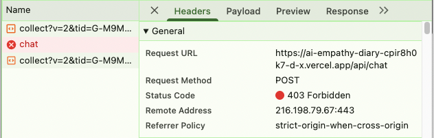

Firebase Auth 서버사이드 검증 + model_labels 마이그레이션
2026-05-24 킥오프 · 2026-05-25 완료
Firebase Auth Admin SDK 서버사이드 토큰 검증으로api/chat.js보안 공백을 해소하고,
레거시 entrymodelLabel전수 마이그레이션으로 폴백 로직 없이 데이터를 일관화한다.
| # | 구분 | 안건 | 결과 |
|---|---|---|---|
| 1 | OQ 결정 | FIREBASE_SERVICE_ACCOUNT Preview / Production 분리 여부 | ✅ Resolved |
| 2 | OQ 결정 | 레거시 entry 처리 — 폴백 vs 마이그레이션 | ✅ Resolved |
| 3 | OQ 결정 | Auth 검증 실패 시 클라이언트 재시도 전략 | ✅ Resolved |
| 4 | OQ 결정 | FEEDBACK_MIN_SAMPLE 복원 기준 충족 여부 | ✅ Resolved |
| 5 | 확정 | Sprint 8 스코프 및 수용 기준 확정 | ✅ 확정 |
| # | 결정 내용 | 담당 |
|---|---|---|
| OQ-1 |
동일 환경변수를 Preview + Production 양쪽 등록 FIREBASE_SERVICE_ACCOUNT JSON 문자열 — 동일 Firebase 프로젝트 사용, 분리 불필요 |
BE |
| OQ-2 |
레거시 entry: 폴백 대신 전수 마이그레이션 26건 중 model 보유 3건 직접 업데이트 · loadModelLabels() / modelLabelCache 제거 · computeModelStats() 단순화 |
BE + PM |
| OQ-3 |
자동 토큰 갱신 후 1회 재시도, 재실패 시 에러 메시지 표시 Firebase ID Token 만료(1h) 시 forceRefresh → retry. 2회 실패 시 사용자 안내 |
FE |
| OQ-4 |
FEEDBACK_MIN_SAMPLE = 1 확정 Sprint 7 임시 완화 → Sprint 8 기준 재검토 완료, 확정으로 전환 — 데이터 수집 민감도 우선 |
PM |
BE
api/chat.js 서버사이드 초기화FIREBASE_SERVICE_ACCOUNT Vercel 등록 (Preview + Production)verifyIdToken() 검증, 실패 시 401 반환model_labels 컬렉션 seeding (6개 모델)firestore.rules — 인증 사용자 읽기 허용, 쓰기 차단modelLabel 전수 마이그레이션 (3건)FE
getIdToken() → Authorization: Bearer 헤더 첨부VERCEL_PREVIEW_RE 추가)loadModelLabels() / modelLabelCache 제거computeModelStats() 폴백 체인 → e.modelLabel 단일 조회initApp() 초기화 경량화 (Firestore 왕복 1회 감소)QA
클라이언트 흐름
getIdToken()Authorization: Bearer <idToken> 헤더 첨부POST /api/chat 요청서버 흐름
auth.verifyIdToken() — 로컬 JWT 검증보안 계층 현황
api/log.js — rate limit만 적용 (Auth 불필요)비용 영향
verifyIdToken() — 로컬 JWT 검증, Firebase API 호출 없음modelLabel 전수 마이그레이션Firestore 업데이트 결과
| 구분 | 건수 | 처리 |
|---|---|---|
| 전체 entry | 26건 | — |
| 이미 완료 (modelLabel 있음) | 15건 | 유지 |
| model 보유, modelLabel 없음 | 3건 | 업데이트 |
| model 필드 없음 (Sprint 5 이전) | 8건 | 집계 제외 |
openai/gpt-oss-120b:free → $C$3코드 제거 영향
loadModelLabels() 함수 전체modelLabelCache Map 전역 변수await loadModelLabels() in initApp()computeModelStats() 폴백 체인 3단 → 1단Before / After
| 등급 | 항목 | 결과 |
|---|---|---|
| 🔴 Blocker |
H-1 — OPTIONS preflight → 401 CORS 처리 전에 verifyIdToken() 호출됨. 브라우저 preflight가 인증 헤더 미전송으로 401 반환. |
✅ 수정 완료 OPTIONS 분기를 auth 검사 앞으로 이동 |
| 🟡 Major |
M-1 — model 필드 없는 entry 5건 누락 Sprint 5 이전 entry — model/modelLabel 모두 없음. 대시보드 통계 미반영. |
⚠ 이월 |
| 🟡 Major |
M-2 — qwen · minimax 라벨 충돌 ($H$8) model_labels seeding 시 두 모델이 동일 해시 버킷 → Firestore 직접 수정. |
✅ 수정 완료 |
| 🟢 Minor |
S-1 — favicon 404 SVG data URI favicon 추가 — 앱 로고와 동일한 엑셀 스타일 아이콘 적용. |
✅ 적용 완료 |
| QA-1 | E2E — 로그인 → AI 응답 → 피드백 → 대시보드 전체 플로우 (Preview) | ✅ PASS |
| QA-2 | Firestore model_labels 캐시 6개 · 레거시 폴백 (model 보유 entry) | ✅ PASS (model 없는 5건 제외) |
| QA-3 | CORS — api/log 미허용 오리진 403 · 브라우저 오류 없음 | ✅ PASS |
/api/chat 요청 → 403 Forbidden 반환localhost · Vercel preview URLVERCEL_PREVIEW_RE 정규식 패턴으로 preview 환경 허용
허용되지 않은 오리진의 /api/chat 요청 → 403 Forbidden 반환 확인
감사합니다